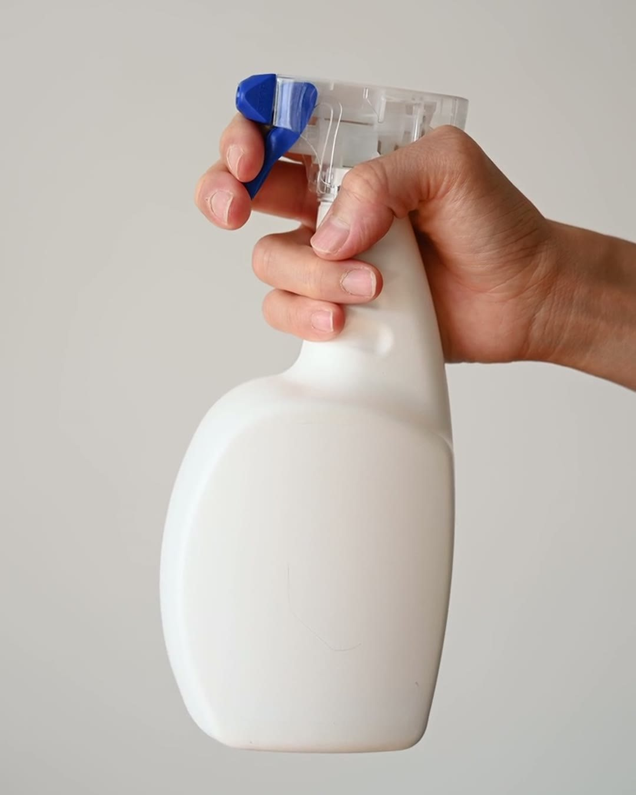
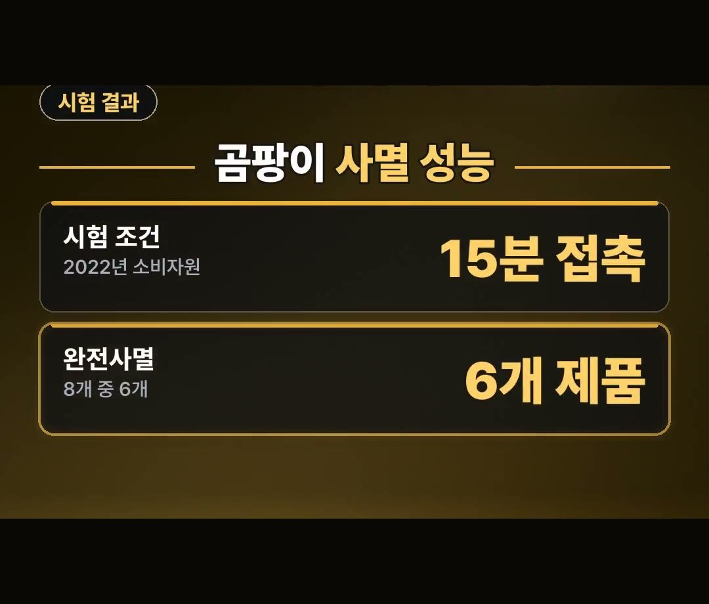
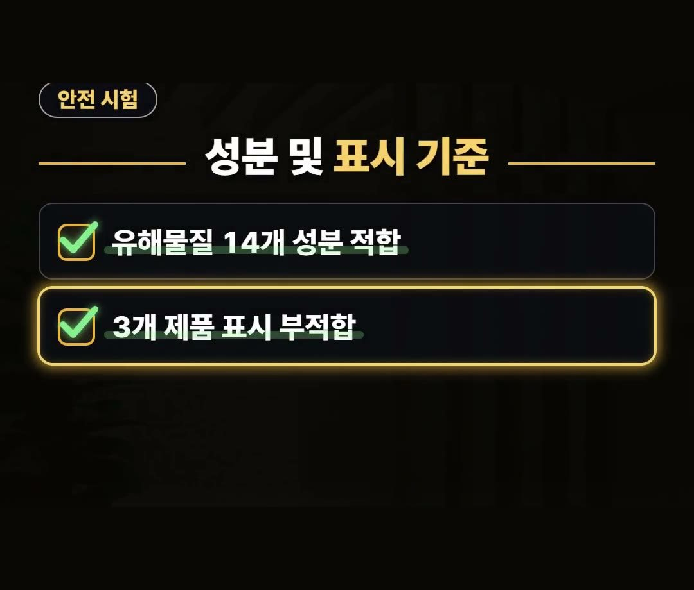
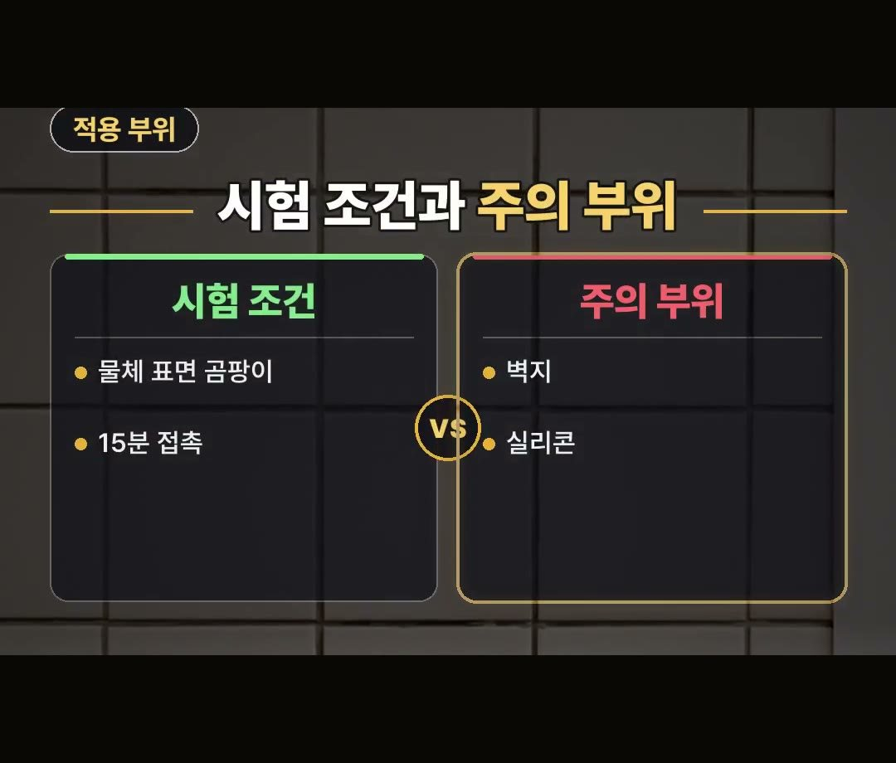
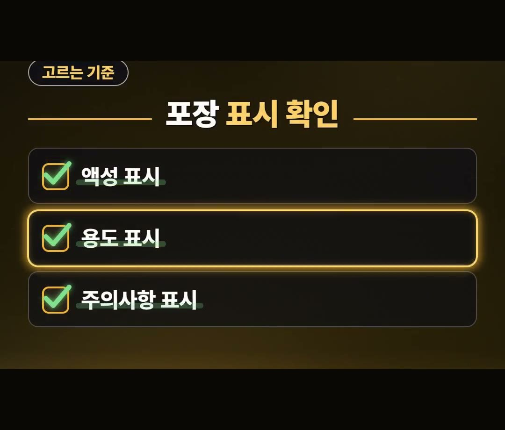

곰팡이 제거제 비교, 값 차이 최대 16.7배 · 포장에서 볼 것
※ 이 글에는 제휴 링크가 포함되어 있으며, 링크를 통해 구매하시면 일정 수수료를 받을 수 있습니다. (가격은 같습니다)
※ 이 포스팅은 쿠팡 파트너스 활동의 일환으로, 이에 따른 일정액의 수수료를 제공받습니다.

곰팡이 제거제 비교를 해 보려고 하면 제품마다 값이 너무 달라서 무엇을 봐야 할지 헷갈리죠?
한국소비자원이 2022년에 견준 시험 자료를 바탕으로, 값 차이와 포장에서 볼 표시를 정리했습니다.
2022년 한국소비자원 시험 자료를 보면 분무기형 8개 제품의 100mL당 가격 차이가 최대 16.7배였어요.
값만 보고도, 성능만 보고도 고르기 어렵다는 내용이라 포장 표시를 중심으로 정리해 봤어요. 💡
곰팡이 제거제 비교, 100mL당 값 차이 최대 16.7배

곰팡이 제거제 값 차이는 최대 16.7배입니다.
같은 양인데도 값이 이렇게 다릅니다.
2022년 한국소비자원이 분무기형 8개 제품을 견줘 보니 100mL당 가격 차이가 최대 16.7배였어요.
여기서 가격은 2022년 7월 온라인 최저 평균가 기준이에요.
지금 판매가와는 다를 수 있으니 살 때의 값으로 다시 따져 보세요.
제품마다 용량이 다르기 때문에 값표만 봐서는 견주기 어렵습니다.
판매가를 용량으로 나눠 100mL당 값으로 맞춰 보면 같은 기준으로 견줄 수 있어요.
소비자원 시험, 15분 접촉 조건의 사멸 결과

그렇다면 성능 시험에서는 어떤 결과가 나왔을까요?
2022년 소비자원 시험에서는 8개 제품 중 6개 제품이 15분 접촉이라는 일정한 조건에서 곰팡이를 완전사멸시킬 수 있었어요.
- 시험 조건: 15분 접촉 (2022년 소비자원)
- 완전사멸: 8개 제품 중 6개 제품
8개 모두가 아니라 6개라는 점, 그리고 조건이 정해진 시험이라는 점을 같이 기억해 두면 좋습니다.
유해물질 안전기준과 액성 표시 시험 결과

안전성 시험에서는 유해물질 14개 성분 안전기준에 전 제품이 적합했습니다.
다만 표시에서는 차이가 있었습니다.
약알칼리성으로 표시된 3개 제품은 실제 시험에서 알칼리성으로 나왔죠.
포장에 적힌 액성 표시와 시험 결과가 달랐던 제품이 있었다는 2022년 자료입니다.
시험 조건과 벽지·실리콘처럼 따져 볼 부위

시험 결과를 볼 때는 어떤 조건에서 나온 것인지 같이 봐야 합니다.
이 결과는 물체 표면 위 곰팡이에 15분간 접촉시킨 시험에서 나온 거예요.
조건이 정해진 시험이라 다른 조건에서의 결과까지 알려 주는 자료는 아닙니다.
그래서 벽지나 실리콘 같은 부위는 포장에 적힌 용도를 꼭 따져봐야 해요.
포장에서 볼 표시 3가지

그래서 값만 보고도, 성능만 보고도 고르기 어려워요.
포장에 적힌 액성과 용도, 주의사항을 보고 청소 부위에 맞는 제품을 고르세요.
- 액성 표시 확인
- 용도 표시 확인
- 주의사항 표시 확인
액성은 약알칼리성, 알칼리성처럼 제품의 성질을 적어 둔 칸이에요.
용도는 어느 자리에 쓰는 제품인지를 적어 둔 칸입니다.
주의사항에는 쓸 때 지킬 점이 적혀 있으니 쓰기 전에 읽어 보세요.
소비자원 자료도 액성과 주의사항, 응급처치 방법 등을 확인한 뒤 사용하도록 안내하고 있어요.
이 시험 자료를 읽을 때 기억할 점
이 글은 특정 제품을 추천하거나 순위를 매기는 글이 아니에요.
2022년에 8개 제품을 견준 자료라서, 지금 팔리는 제품 전체를 말해 주지는 않습니다.
값 차이는 최대 16.7배까지 났지만, 값이 사멸 결과와 어떻게 이어지는지는 이 글에서 다루지 못했어요.
그래서 값, 시험 조건, 포장 표시를 따로따로 확인하는 편이 좋습니다.
링크 상품 안내
아래 링크의 상품이 위 소비자원 시험 대상 제품인지는 확인하지 못했어요.
시험 결과와는 따로 봐 주시고, 상품 설명에 적힌 액성과 용도, 주의사항을 먼저 확인해 보세요.
정리
- 2022년 한국소비자원 시험 결과 곰팡이 제거용 욕실세정제(분무기형) 8개 제품의 100mL당 가격 차이가 최대 16.7배였습니다. (가격은 2022년 7월 온라인 최저 평균가 기준)
- 8개 제품 중 6개 제품이 물체 표면 위 곰팡이에 15분 접촉이라는 일정한 조건에서 곰팡이를 완전사멸시킬 수 있었습니다.
- 유해물질 14개 성분 안전기준은 전 제품이 적합했고, 약알칼리성으로 표시된 3개 제품은 시험에서 알칼리성으로 나왔습니다.
- 벽지나 실리콘 같은 부위는 포장에 적힌 액성, 용도, 주의사항 표시를 보고 청소 부위에 맞는 제품을 고르는 것이 좋습니다.
제품 링크는 아래에 모아 두었어요.
📌 2022년 한국소비자원 시험 자료를 2026년 10월에 정리한 글이에요. 지금 판매가와 제품 구성은 다를 수 있어요.
· 소비자24 (한국소비자원 비교공감 제2022-19호 욕실세정제)
사진·영상사진·영상: Pexels (Lan Thanh, Liliana Drew, Monstera Production, Ron Lach)